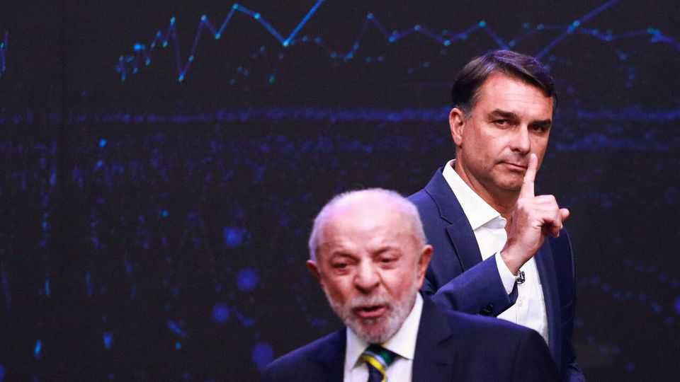
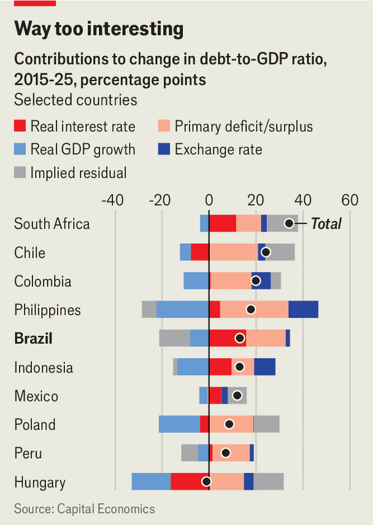

Brazil’s weird economy needs serious reform
Neither Lula nor Flávio Bolsonaro have the stomach for it

Oct 22nd 2026
DEMOCRATS OF THE world shuddered after the first round of Brazil’s presidential election. Flávio Bolsonaro, son of a coup-plotting former president, unexpectedly beat the incumbent, Luiz Inácio Lula da Silva. He looks poised to carry the run-off against Lula, as the 80-year-old leftist icon is known, on October 25th. Capitalists, too, trembled—but with excitement. São Paulo’s stock-market index jumped by nearly 8% the next day, the real strengthened and yields on government bonds fell.
This was a brutal verdict on Lula’s economic stewardship. GDP growth has beaten (glum) forecasts, unemployment is low and inflation has stayed close to the 1.5-4.5% range targeted by the Central Bank of Brazil (BCB). But his fiscal abandon and anti-business rhetoric spook markets. The “primary” budget surplus (ie, before interest payments) he inherited is now a deficit and the IMF expects public debt to hit 97% of GDP this year, up from 84% in 2022. “We need to put an end to all this nonsense of running a surplus and maintaining fiscal discipline,” he recently averred.
Mr Bolsonaro, by contrast, styles himself on Javier Milei, Argentina’s chainsaw-wielding president whose free-market reforms have led to some success (and lots of pain). He, too, uses a cutting tool—a giant pair of scissors—as an electoral prop, vowing to slash taxes, red tape and graft. Yet his economic ideas are hazy. To offset his proposed tax cuts and 900bn reais ($179bn, or 6.6% of GDP) over four years in infrastructure spending, he wants to reduce the number of ministries, digitise public administration and sell federal buildings.
This is implausible—he would be lucky to get half his promised savings from such tinkering. It is also unequal to the task. It would take true Milei-like ardour to slice through Brazil’s economic troubles. These are caused by a gnarly mix of high public spending, stubborn inflation and low saving. The result is a crippling cost of capital. Some analysts put Brazil’s real interest rate, the BCB’s policy rate adjusted for next year’s expected inflation, at 9% or more. That is higher than in Russia and four times that in peaceful peers like Chile, the Philippines or South Africa.
It all starts with the public finances. Brazil’s 65,000-word doorstop of a constitution bars cuts to nominal public-sector wages and links pension, disability and unemployment benefits to the minimum wage, which is adjusted annually based on recent inflation and GDP growth. This ratchet has lifted mandatory spending to 90% of the federal budget.
It also perpetuates inflationary pressure. This plus a generous welfare state in turn make Brazilians unwilling to save. At 14% of GDP, the national savings rate is 12 percentage points below the world average. If price rises have regularly eroded your bank balance in the past and the state pays for your health care, school and pension, you may as well spend all the money you make right away—especially if, like most people in unequal Brazil, you do not make much to begin with.
No government in recent memory has had a serious go at belt-tightening. And Lula has been no less loose. He has repeatedly allowed the minimum wage (and so everything linked to it) to rise above inflation. He has also splurged nearly $260bn on cheap credit for arms-, chip- and drugmakers, among others, with little to show for it—between 2022 and 2025 industry shrank as a share of GDP. When he was still trying to balance the books earlier in his term, he raised taxes, piling more woe onto already woebegone businesses.
Lula’s stimulus also meant that the BCB had no choice but to raise interest rates. And because nearly half of all lending in Brazil is subsidised—including most mortgages, loans to farmers and infrastructure credit—the hikes must be higher than in other countries to have the same cooling effect on prices. Between mid-2024 and mid-2025 the policy rate rose seven times, to 15%. Though it has come down to 13.8%, it remains as high as it got in the wake of the post-pandemic price surges.

High real interest rates raise the cost of servicing public debt and push up the debt-to-GDP ratio (see chart). And with such juicy returns on offer, investors prefer to lend to the government, which for all its flaws seems a safer bet than most companies. This raises the cost of capital for everyone else. It also creates perverse incentives in the financial system, explains Monica de Bolle of the Peterson Institute for International Economics, a think-tank in Washington. Around half of government debt consists of floating-rate treasury bills (known as LFTs), which pay a daily return based on the BCB’s policy rate. Commercial banks have balance-sheets full of this easy money. The BCB could thus be cutting rates less than it otherwise might, for fear that deeper cuts hurt lenders’ profits and provoke a banking crisis.
LFTs blunt monetary policy in another way. Coupon payments to the banks and wealthy Brazilians who own them undercut the cooling effect on consumption that tightening aims to achieve. “The more I raise interest rates, the more income holders receive,” the BCB’s president, Gabriel Galipolo, complained earlier this year.
The one way out of the mess is through belt-tightening. It would bring down inflation, lower the real interest rate and make capital available for productive uses. Mr Bolsonaro’s team whisper about reform but the candidate himself has rejected changes to pensions or indexation. If Lula pulls off a surprise comeback in the run-off, he is unlikely to discover his inner fiscal hawk. And any president would struggle to persuade three-fifths of both houses of Congress required to dismantle the constitutional ratchet. Markets may prefer Mr Bolsonaro to Lula. Whomever they get will turn out to be a disappointment. ■